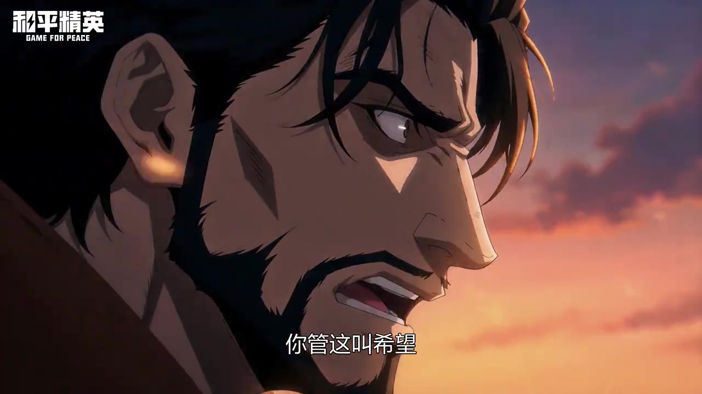

SELECTED WORKS / FILM & CONCEPT ART
在故事中
构建世界
罗能 / 概念原画 · 插画
项目经历与个人练习
从怪物的轮廓，到角色经历的城市，再到失真的梦境。选择一个项目，观看影像与设计过程。
01 / 惊悚乐园
宣传 PV · 怪物概念设计 / 03:52
查看惊悚乐园项目 →
02 / 平田的世界
互动影游 · 角色与场景设计 / Steam新品节全球榜第15名
查看平田的世界项目 →
03 / 和平精英
烈焰·特劳斯往事PV · 动画前期资产 / 08:57
查看和平精英项目 →
04 / 失真地
过渡空间 · 梦核绘本 / 入围第七届 GGAC 数字艺术大赛
查看失真地项目 →
05 / 个人练习
插画设计 · 角色设定 · 中华风 × Y2K
查看个人练习项目 →